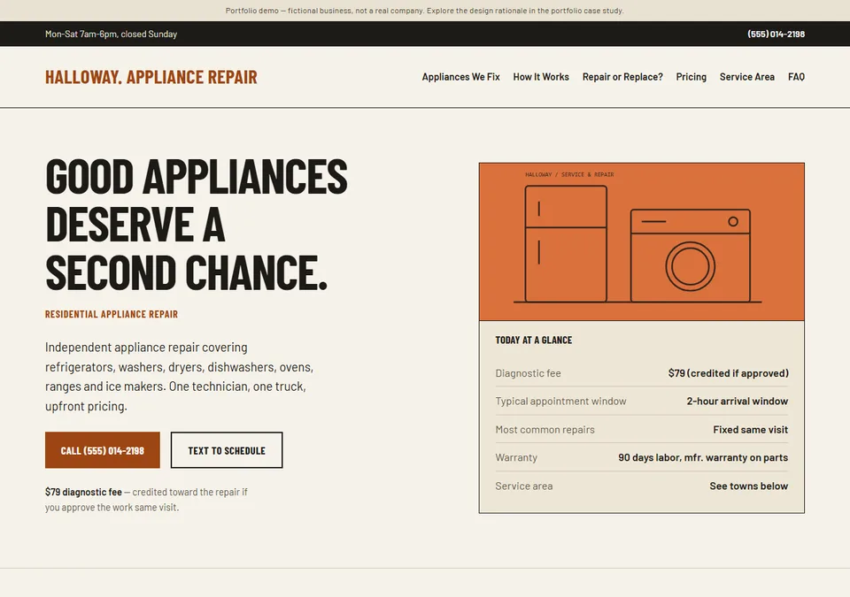
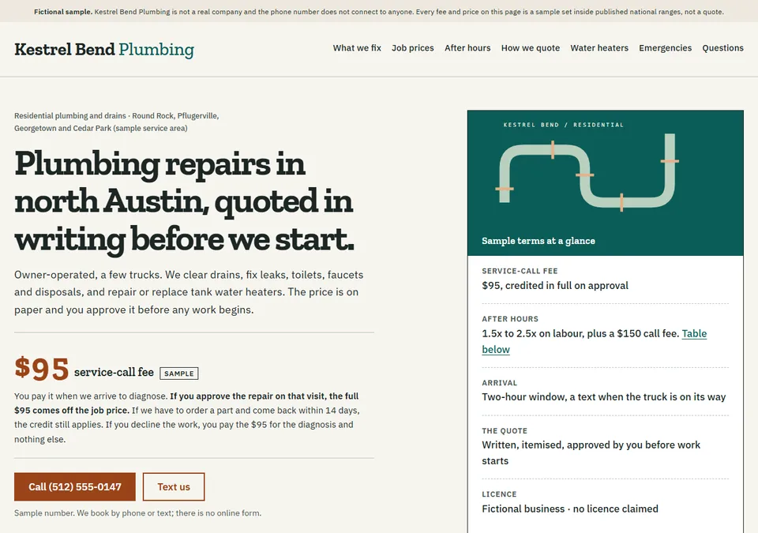
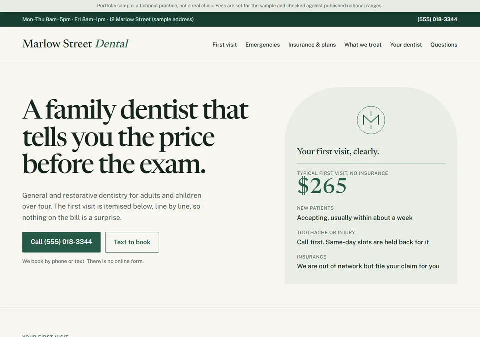
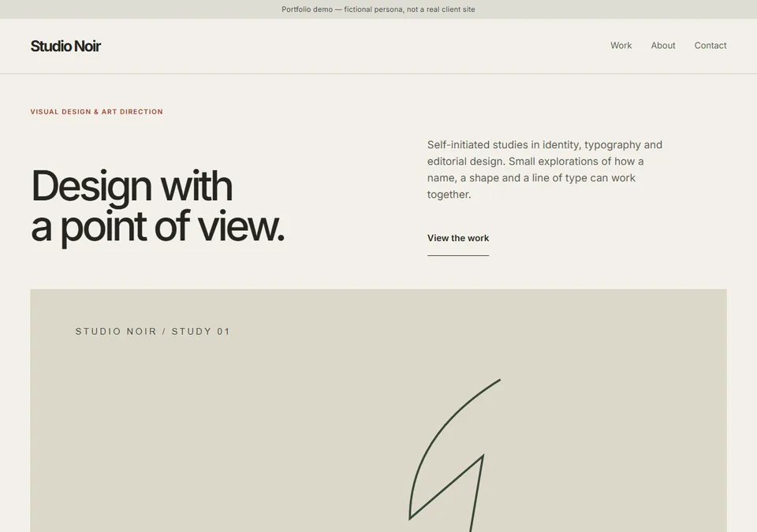
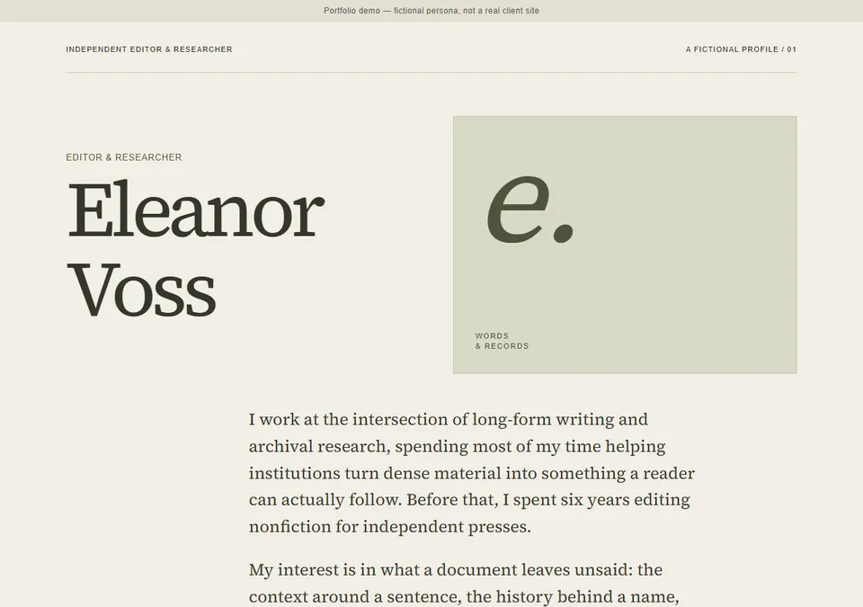

Good form.
Better flow.
A better first impression.
Less work after it.
I design service websites and simple enquiry workflows for business owners with enough on their plate.
Explore the workService pages,
researched first.
Five sample sites for fictional businesses, each built from real industry research. Open a live page, or read why it was built that way.

02Halloway Appliance RepairA one-truck repair business has to answer price, scope and “is it worth fixing?” before the phone rings.
Local trade · sample
03Kestrel Bend PlumbingA plumbing site that shows what a visit costs, what after-hours costs and what a written quote looks like, and is careful about what it will not claim.
Local trade · sample
04Marlow Street DentalA dental site that puts the first-visit price, the X-ray policy and an emergency guide in front of a nervous patient.
Health practice · sample
05Studio NoirA portfolio grid that stays a plain, fast grid, and a detail page that can be reused for every new project.
Creative portfolio · sample
06Eleanor VossOne quiet page in serif type that has to survive being extended later without a rebuild.
Personal bio page · sample
Self-initiated work for fictional businesses; no client results claimed. See all work and how it was built.
The enquiry,
considered.
A service page should make the next step easy. This concept follows that step all the way to the owner’s reply.
Try the live demoA mobile-friendly service page explains the offer and gives visitors one next step.
View the page scopeA short enquiry captures the business, what they need, and when they’re considering it.
Try the customer viewOne place to review the enquiry, see its status, and prepare a personal response.
Explore the owner viewWhat happens after someone clicks “I’m interested”?
Give the visitor a short form and give the owner useful context, a status and a draft.
A working portfolio concept. No client results claimed; no live inbox or CRM connected.
One enquiry.
Both sides of the story.
Use the customer form, then review the result in the owner’s desk. Everything here stays in this browser session.
Let’s start with the basics.
A short enquiry, with enough context to follow up.
Your enquiry desk.
1 enquiryReview and adapt this draft yourself. No reply is sent.
02 / THE APPROACH
Design for the visitor.
Think about the owner.
I’m building Form & Flow around a practical question: can a website make the work that follows it easier?
My focus is a clear service page and a manageable enquiry process. The work above is a self-initiated demonstration of that approach, ready to explore before discussing a real project.
Start with the message. Decide what information matters. Make the next action obvious on both sides.
Start small.
Make it useful.
A defined first project for a service business. We agree the details before work begins.
Shape your project briefOne service landing page
Clear messaging, one next step, and a layout that works on mobile.
One form. One destination.
The essential enquiry fields, routed to one agreed place.
A way to follow through
Follow-up status and a reply template you can adapt.
Refine, test, hand over
One revision, testing, and a practical handover.
Price and delivery timing follow scoping. Hosting, paid tools and ongoing support are separate.
YOUR STARTING POINT
Less admin.
Where would
you begin?
Put the task into words. Download a simple project brief to keep, edit or attach to your email.
Local download only. This is not a live enquiry form.A good next step
starts with hello.
Tell me about your business and the enquiry task you’d like to make easier.
Opens your email app. Review and send the message yourself. If it doesn’t open, copy the address into your email service.